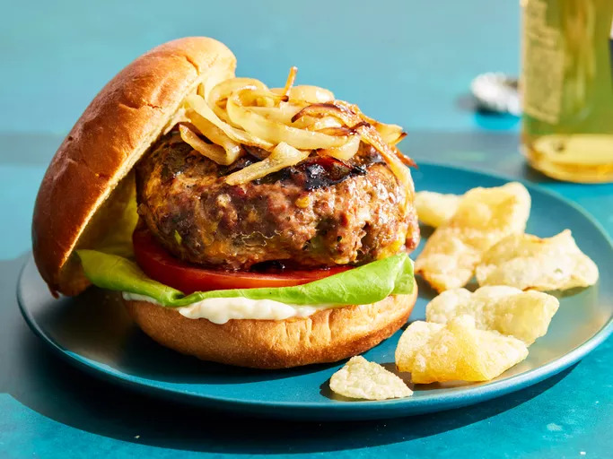

Hamburger's recipe

Description:
The best burger recipe for summertime grilling! This juicy burger is jam-packed with all kinds of stuff and has no tasteless bread crumbs. Serve on buns with your favorite condiments.
Ingredients:
- Beef
- Onion
- Cheese
- Egg
- Seasoning, herbs and sauces
Steps:
- Gather all ingredients. Preheat an outdoor grill for high heat and lightly oil the grate.
-
Meanwhile, combine ground beef, onion, cheese, egg, onion soup mix, minced garlic, garlic powder, soy sauce, Worcestershire sauce, parsley, basil, oregano, rosemary, salt, and pepper in a large bowl.
- Use your hands to form the mixture into 4 patties.
-
Cook patties on the preheated grill until no longer pink in the center and the juices run clear, about 4 to 5 minutes per side.
-
An instant-read thermometer inserted into the center should read at least 165 degrees F (74 degrees C).